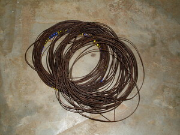
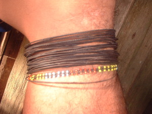

tikes  
/tikɔs/
n.
n.
leg bracelet
Cult. May possibly be worn to ward off evil and disease but most say they are just for decoration. Some say they are worn so the wearer will not get tired aven after a long journey
Eng. leg bracelet; bracelet, leg
OCM: Ornament (301)
Online dict status: -
Usage level: M
vi.
for someone (egtitikes, agent, eg><ø-rdpCV-) to wear a leg bracelet
Egtitikes ki ke eggendiyè ki te bubungan su eyew kenè ki egkabuntel.
Eng. wear bracelet
Online dict status: -
Usage level: M
Updated by: RJH,AAA
Last updated: 13/Oct/2009
This page last updated: 19/May/2012
Copyright © 2009-2010, Matigsalug Language Christian Association, Inc